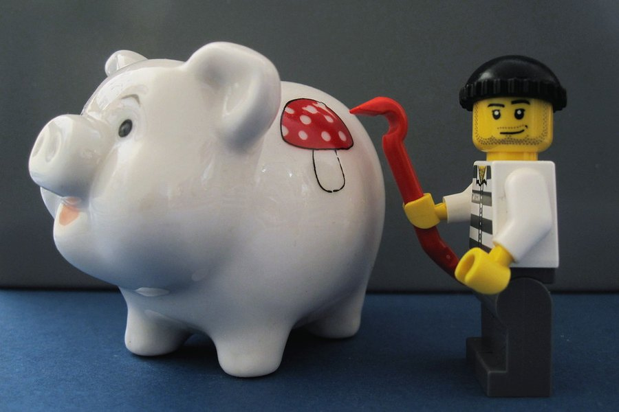

VapoCept Price: Cost Per Day, Pack Choice and Guarantee Timing
Three packs, three very different daily costs. We ran the math with shipping included, matched each pack to a goal and worked out when to decide so the guarantee still covers you.

Key takeaways
- Three packs, no single bottle: 2 bottles at $79 each plus $9.99 shipping, 3 at $69, or 6 at $49, at the time of writing.
- Cost per day runs $1.63 to $2.80, since one bottle is 30 capsules and you take one a day.
- It's a one-time charge. No subscription and no automatic reorders, based on the official order page.
- The guarantee is 60 days, so decide around day 45 to 50 whichever pack you buy.
- Buy the 6-pack second, not first. It's the best price per day, but only once you know it suits you.
The VapoCept price at the time of writing is $79 a bottle for two bottles (plus $9.99 shipping), $69 a bottle for three, or $49 a bottle for six, with free US shipping on the larger packs. At one capsule a day, that's about $2.80, $2.30 or $1.63 per day. Every order is a one-time charge.
Those are the numbers published on the official order page when we checked; prices change, so confirm the current figures there before you buy. The more useful part of this page is the math behind them: what you pay per day, how each pack lines up with the 60-day guarantee, and which one fits what you're trying to do. If you haven't decided whether VapoCept is right for you at all, start with our full VapoCept review.

VapoCept: check today's price
A ginkgo-led daily capsule with turmeric, lutein and green tea, every dose printed. One capsule a day, stimulant-free. Sold only on the official site, with a 60-day money-back guarantee.
See the official price →How much does VapoCept cost?
VapoCept is sold in three bundles. There's no single-bottle option on the official page, so the smallest order is a two-month supply. Here are the packages as listed at the time of writing.
 2 Bottles · Starter
$79/bottle
Check Availability →
+ $9.99 shipping
6 Bottles · Best Value
$49/bottle
Claim Discount →
Free US Shipping
2 Bottles · Starter
$79/bottle
Check Availability →
+ $9.99 shipping
6 Bottles · Best Value
$49/bottle
Claim Discount →
Free US Shipping
 3 Bottles · Popular
$69/bottle
Claim Discount →
Free US Shipping
3 Bottles · Popular
$69/bottle
Claim Discount →
Free US Shipping
Prices shown are the manufacturer's published rates at the time of writing and can change without notice.
Each bottle holds 30 capsules and the dose is one capsule a day, so a bottle is exactly one month. That makes the cost easy to reason about: the per-bottle price is also your monthly cost, before shipping.
What's the VapoCept price per day?
| Package | Total at checkout | Capsules | Cost per bottle (month) | Cost per day |
|---|---|---|---|---|
| 2 bottles | $158 + $9.99 shipping = $167.99 | 60 | $84.00 with shipping | $2.80 ($2.63 before shipping) |
| 3 bottles | $207, free US shipping | 90 | $69.00 | $2.30 |
| 6 bottles | $294, free US shipping | 180 | $49.00 | $1.63 |
To check any price yourself: divide the total you'll actually pay, shipping included, by the number of capsules. Since you take one a day, capsules equal days. If the official page has changed its prices since we wrote this, the same formula still works.
The spread is wide. The six-bottle pack costs about 42% less per day than the two-bottle pack once shipping is counted. Bought at the two-bottle rate, six months would run about $504. The six-pack is $294, a difference of roughly $210. That's real money, but only if you're going to take all six bottles.
How does that compare with everyday spending?
Put in daily terms, the six-pack costs less than a drip coffee at most cafés, and the two-pack costs about the same as one. Over a year, though, the gap adds up: roughly $596 at the six-pack rate versus about $1,022 at the two-pack rate with shipping. Annual cost is a better lens than daily cost for anything you plan to take long term, because it shows what you're really committing to.
Which VapoCept pack should you buy?
Choose by your plan, not by the discount. Here's how we'd match each package to a goal.
| Your goal | Pack that fits | Why |
|---|---|---|
| See if it suits you, spend as little as possible | 2 bottles | Lowest total outlay; 60 days lines up with the 60-day guarantee |
| Give it the length of a typical ginkgo study | 3 bottles | 90 days covers the 12-week window most ginkgo trials used |
| You've already tried it and want to keep going | 6 bottles | Lowest cost per day; only makes sense once you know it agrees with you |
| Buying for two people in one household | 6 bottles | Three months each at the lowest per-capsule price |
The 2-bottle pack: the trial option
Smallest commitment, highest price per day. The $9.99 shipping also pushes the effective cost per bottle to about $84. Its advantage is timing: you'll finish the second bottle right around day 60, so you can judge the full supply before the guarantee window closes.
The 3-bottle pack: the honest test
If you want to give VapoCept the kind of time the research suggests, this is the pack. Ginkgo studies usually measured results after 12 weeks or more, and three bottles gets you there. The trade-off is that the guarantee runs out before you finish, so you'll need to make a refund decision around day 45 to 50, partway through the second bottle. Our page on how long VapoCept takes to show results explains that timeline.
The 6-bottle pack: for repeat buyers
Best per-day price by a wide margin. It's a poor first purchase, though. You'd be committing to six months of a product you haven't tried, with a guarantee that expires after two. Check the refund terms before you buy: if they require unopened bottles to be returned, a six-pack refund is workable; if not, you could be left with four bottles you don't want.
How does the 60-day guarantee fit each pack?
Orders through the official checkout carry a 60-day money-back guarantee. Two details in the terms decide how useful that is, so read them on the official page before ordering: whether the 60 days start on the order date or the delivery date, and whether you need to return the bottles and pay the postage yourself.
A simple plan that works for any pack:
- Write the guarantee deadline on your calendar the day the order arrives.
- Set a reminder for day 45. That's your decision day.
- Keep the packaging, your order number and any unopened bottles.
- If you're not convinced by day 45 to 50, contact customer service so your request lands well inside the window. The label lists +1 (507) 448-8190 and contact@customercs.com.
Waiting until day 59 is how people lose refunds. Shipping and processing take time, and a request that arrives a day late usually isn't honored.
What the guarantee really covers by pack
With two bottles, the window covers nearly the whole supply. With three, it covers about two-thirds, so the last bottle is effectively a purchase you're keeping. With six, it covers one-third: you'll judge the product on the first two bottles and, depending on the terms, return or keep the other four. The guarantee is the same 60 days in every case. What changes is how much of your money is still at stake when it ends.
Is VapoCept a subscription?
No. Each package is a one-time charge, based on what the official order page shows at the time of writing. Nothing ships again and nothing renews unless you place another order. That's worth confirming at checkout anyway. Before you pay, check that the order summary shows a single charge for the pack you picked and nothing extra you didn't choose. If you later want more, you simply reorder.
That's a genuine plus. Many supplement offers sign buyers up for monthly shipments that are easy to miss and annoying to cancel. A one-time charge means your card statement shows exactly what you agreed to, and there's nothing to remember to switch off. The flip side is that you'll need to plan reorders yourself if you decide to stay on it, ideally a week or two before the last bottle runs out.
Is VapoCept worth the price?
Price alone doesn't answer this. Value depends on what you get per dollar, and that comes back to the label. At $1.63 to $2.80 a day you're buying 100 mg of a non-standardized ginkgo extract, 250 mg of glucosamine and small amounts of four other extracts. None of them reaches the doses used in memory research. A standardized ginkgo extract at a full trial dose generally costs less per day on its own, and our look at whether VapoCept works goes through why dose matters so much.
What the price does buy: a one-capsule routine, a printed label, no stimulants, and a money-back guarantee if it doesn't suit you. For some people that convenience and safety net is worth paying for. Others will get more research-backed value from a different formula. Our 2026 memory supplement ranking compares cost per day alongside dose and evidence.
What would research doses cost in this format?
It's worth asking what you'd need to match the studies. Ginkgo trials typically used 120 to 240 mg of a standardized extract, more than VapoCept's 100 mg of a different extract. Lutein studies used around 10 mg, eight times what the capsule supplies. Getting there would take several capsules a day, which would multiply the daily cost and break the one-a-day design. So when you compare VapoCept's price with other products, compare cost per studied dose, not just cost per bottle. A cheaper-per-bottle product with weaker doses isn't a bargain, and neither is a pricier one.
Where can you buy VapoCept, and is it on Amazon?
At the time of writing, the only sales channel we could verify is the official order page. The guarantee is tied to orders placed through the official checkout, so a bottle from a marketplace or auction listing may not be covered, and you can't easily confirm it's genuine or stored properly.
If you see VapoCept for much less somewhere else, treat that as a warning sign rather than a bargain. Our article on whether VapoCept is legit covers how to spot a copycat page.
A quick check before paying: the pack prices should match the three-bundle structure described here, the checkout should show the full total including any shipping before you enter card details, and the bottle pictured should match the label we describe in our review, with Gex Corporation LLP of Ogden, Utah, listed as distributor. If any of those look off, stop and look for the official page again.
Are there VapoCept coupons or discount codes?
We're not aware of any official coupon program. The discount built into VapoCept's pricing is the bundle structure itself: the more bottles, the lower the price per bottle. Third-party "coupon" sites often just link to the same order page and earn a commission, and some list codes that don't work. Don't let a fake countdown or "limited stock" banner rush you into the six-pack either. If a page pressures you, close it and come back to the official page when you've decided.
Are there any hidden costs?
A few things can raise what you actually spend, so factor them in:
- Shipping on the 2-bottle pack: $9.99 at the time of writing, which adds about 17 cents a day.
- Return postage: if the refund terms require you to send bottles back at your own cost, that comes out of your refund in practice.
- International orders: free shipping is listed for US addresses; outside the US, check costs and whether duties apply.
- A doctor's visit: if you take blood thinners or other medications, a quick check with your doctor or pharmacist first is worth it. Our VapoCept side effects guide lists who should ask.
- Your time: a refund that requires boxing up bottles and visiting the post office has a cost too. It's one more reason to try the smaller pack first.
Our take: which VapoCept pack would we choose?
For a first order, we'd pick the 3-bottle pack if you're willing to commit to a proper 90-day test, and the 2-bottle pack if you mostly want to see how it sits with you before spending more. The three-pack costs less per day and skips the shipping fee. The two-pack keeps your total outlay down and finishes inside the guarantee.
We'd only buy the six-pack after a first round that you're happy with. At that point it's the sensible choice, saving around $35 a month compared with the two-bottle price. Whatever you choose, put the day-45 reminder on your calendar the moment it arrives.
And keep the price in proportion. VapoCept is a gentle, low-dose formula, so the best value comes from buying only as much as you need to reach a clear answer. Spend the first order learning whether it does anything for you. Spend the second, if there is one, saving money.
VapoCept: check today's price
A ginkgo-led daily capsule with turmeric, lutein and green tea, every dose printed. One capsule a day, stimulant-free. Sold only on the official site, with a 60-day money-back guarantee.
See the official price →Frequently asked questions
Can I buy just one bottle of VapoCept?
Not on the official order page at the time of writing. The smallest package is two bottles, which is a 60-day supply at one capsule a day.
Does VapoCept charge tax?
That depends on your state and the seller's setup. Any sales tax should appear in the order summary before you pay, so check the final total at checkout.
How long does one bottle of VapoCept last?
One bottle holds 30 capsules and the label says to take one a day, so a bottle lasts 30 days. A 3-bottle pack lasts about three months.
Can I change my order to a bigger pack later?
There's no published upgrade option. If you start with two bottles and want more, you'd place a new order for whichever pack you want at the current price.
Does VapoCept ship outside the United States?
Free shipping is listed for US orders on the larger packs. For other countries, check the official order page for availability, shipping cost and any import duties before you order.
Is the VapoCept price the same everywhere?
It should only be sold through the official page, where the prices are set. Listings elsewhere at very different prices may be resellers or fakes and may not be covered by the 60-day guarantee.
What payment methods does VapoCept accept?
The official checkout lists the accepted methods at the payment step. Paying by credit card gives you an extra layer of protection if a refund dispute ever comes up.
Check today's VapoCept price
Prices change, and the official page always has the current numbers. Every pack is a one-time charge with a 60-day money-back guarantee on official orders.
See VapoCept's official price →Related: VapoCept review · Is VapoCept legit? · How long VapoCept takes to work · Does VapoCept work? · Best memory supplements of 2026